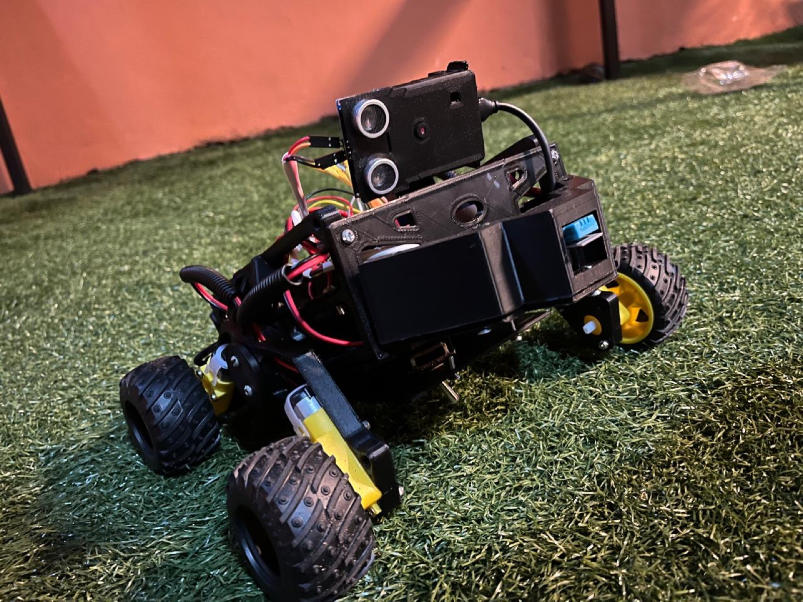

Sage rides along
An onboard scout persona on Cerebras. It reads the sensor line, pulls a still off the camera, names what it is looking at, and says it out loud to the operator and the judges.
Introducing Blackout V3
A recon rover for places people should not enter. It drives in, looks around, and reports back out loud.

Built on
The board drives. The camera streams. The laptop thinks. Any one of them can drop without stranding the robot on the field.
An onboard scout persona on Cerebras. It reads the sensor line, pulls a still off the camera, names what it is looking at, and says it out loud to the operator and the judges.
Motion sequences live in the firmware, not in the laptop. Lose Bluetooth mid-run and the rover finishes the run anyway, then waits to be found.
One CSV line every 100 ms over BLE notify: temperature, humidity, distance, and the slot for every sensor still on the bench.

Each analysis saves the exact frame it was based on. The findings log is the run history, and it is what the team reviews after a heat.
It talks. In English and in Spanish.
Neural text to speech through Deepgram, falling back to Edge voices when the key is missing. The operator drives with a gamepad and listens instead of reading tiles.
Everything here is on the robot today. The roadmap lives one section down, clearly marked as not built yet.
A drag and drop editor in the console. Compose a run out of blocks, save it, send it. Sage can write one for you and hand it back for edits.
A controller maps straight onto the same BLE command channel the dashboard uses. Manual driving and scripted routines share one path.
The deploy script finds the Giga R1 and the ESP32-CAM, compiles each, and uploads without anyone guessing at port names.
Sage raises the camera lamp when a frame comes back too dark, takes the shot again, and drops it back down.
The stream retries on drop instead of leaving a dead panel, and an analysis without a camera says so rather than spinning forever.
Roadmap
Each version threw away something the last one was proud of. Drag sideways to walk through them.
Two boards and a relay. A Mega read the sensors, an Uno drove the motors, and an ESP32 module carried Bluetooth between them.
Collapsed to a single Uno R4 WiFi, added the ESP32-CAM on its own network, and introduced Sage as the voice of the robot.
Moved to the Giga R1 WiFi, runs became a language, and the whole robot flashes from one command. This is the competition build.
Not built. The open question is closed-loop motion: every turn today is a guess in milliseconds that drifts with battery charge.
Wired and working today. Fields with no sensor behind them report zero rather than a number nobody measured.
Pricing
Same firmware in every tier. What changes is how much of the soldering, tuning and swearing is already done.
Arrives paired. Charge it, open the console, run a heat the same afternoon.
Get BlackoutCompetition fiction: Blackout is a WRO 2026 Future Innovators project, not a company. The prices above are part of the pitch. Nothing here is for sale, and the robot, the code and the camera frames are real.
Read how it works, or watch what it found on the last run.